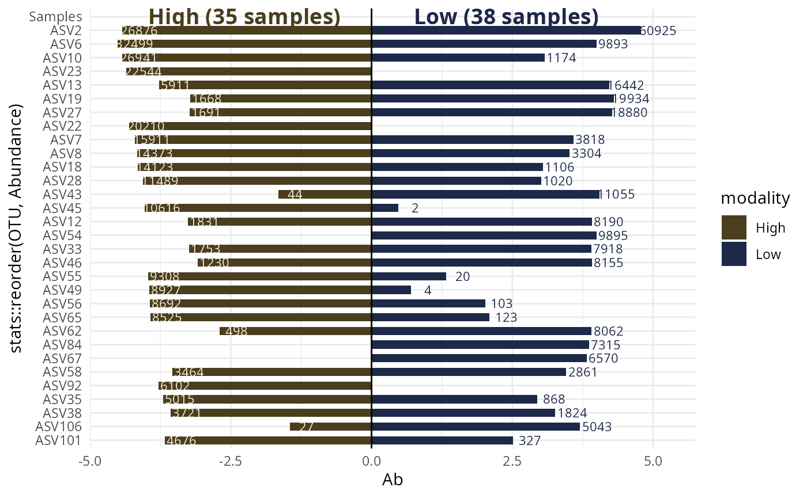
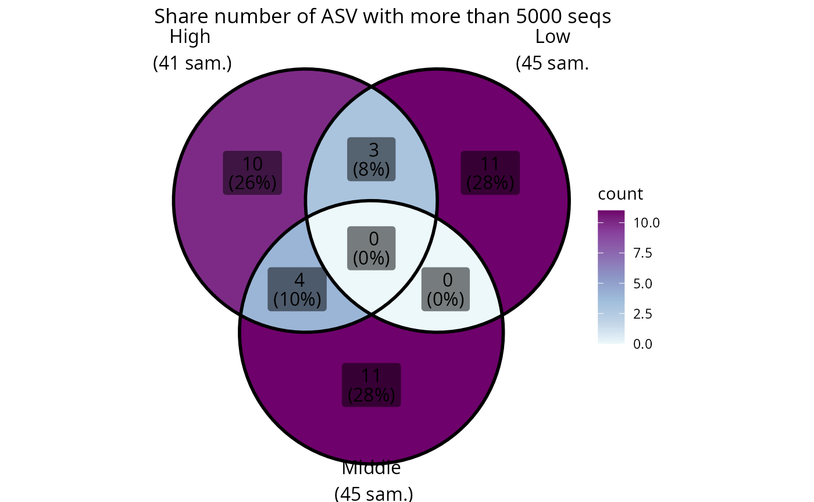
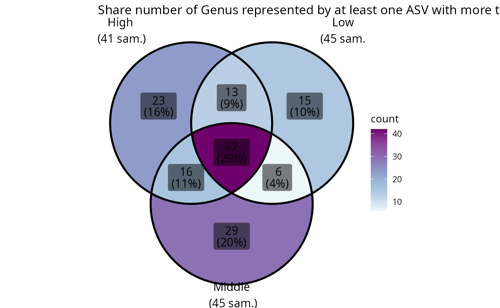

library(MiscMetabar)
data(data_fungi)Permanova
data_fungi_woNA4height <- subset_samples(data_fungi, !is.na(data_fungi@sam_data$Height))
res_ado <- adonis_pq(data_fungi_woNA4height, "Tree_name+Height")
knitr::kable(res_ado)| Df | SumOfSqs | R2 | F | Pr(>F) | |
|---|---|---|---|---|---|
| Model | 63 | 36.92559 | 0.5881754 | 1.518899 | 0.001 |
| Residual | 67 | 25.85431 | 0.4118246 | NA | NA |
| Total | 130 | 62.77990 | 1.0000000 | NA | NA |
Graph Test
data_fungi_woNA4height <- subset_samples(data_fungi, !is.na(data_fungi@sam_data$Height))
graph_test_pq(data_fungi_woNA4height, "Height")
Compare two (group of) samples
Biplot
data_fungi_low_high <- subset_samples(
data_fungi,
data_fungi@sam_data$Height %in%
c("Low", "High")
)
data_fungi_low_high <- subset_taxa_pq(
data_fungi_low_high,
taxa_sums(data_fungi_low_high) > 5000
)
biplot_pq(data_fungi_low_high, fact = "Height", merge_sample_by = "Height")
#> Warning: Removed 1 row containing missing values or values outside the scale range
#> (`geom_rect()`).
Compare two (group of) samples with a table
compare_pairs_pq(data_fungi_low_high,
bifactor = "Height",
merge_sample_by = "Height",
modality = "Time"
)
#> # A tibble: 4 × 13
#> modality nb_ASV_High nb_ASV_Low nb_shared_ASV div_High div_Low nb_shared_seq
#> <chr> <dbl> <dbl> <dbl> <dbl> <dbl> <dbl>
#> 1 0 12 16 9 1.8 1.37 57639
#> 2 5 20 18 14 1.95 1.98 76006
#> 3 10 11 13 10 1.18 1.25 47042
#> 4 15 17 19 12 2 2.04 161348
#> # ℹ 6 more variables: percent_shared_seq_High <dbl>,
#> # percent_shared_seq_Low <dbl>, percent_shared_ASV_High <dbl>,
#> # percent_shared_ASV_Low <dbl>, ratio_nb_High_Low <dbl>,
#> # ratio_div_High_Low <dbl>Venn diagram

ggvenn_pq(data_fungi, fact = "Height") +
ggplot2::scale_fill_distiller(palette = "BuPu", direction = 1) +
labs(title = "Share number of ASV among Height in tree")
ggvenn_pq(data_fungi, fact = "Height", min_nb_seq = 5000) +
ggplot2::scale_fill_distiller(palette = "BuPu", direction = 1) +
labs(title = "Share number of ASV with more than 5000 seqs")
ggvenn_pq(data_fungi,
fact = "Height", taxonomic_rank = "Genus",
min_nb_seq = 100
) +
ggplot2::scale_fill_distiller(palette = "BuPu", direction = 1) +
labs(title = "Share number of Genus represented by at least one ASV with more than 100 seqs")
Upset plot
Venn diagram can quickly become complex to read when the number of modalities increase. One graphical solution is upset plot. MiscMetabar propose a solution based on the package ComplexUpset.
upset_pq(data_fungi, fact = "Height")
upset_pq(data_fungi, fact = "Time")
ComplexUpset package allow powerful configuration of you
plot as you can see in the following figure.
upset_pq(
data_fungi,
fact = "Time",
width_ratio = 0.2,
annotations = list(
"Sequences per ASV \n (log10)" = (
ggplot(mapping = aes(y = log10(Abundance)))
+
geom_jitter(aes(
color =
Abundance
), na.rm = TRUE)
+
geom_violin(alpha = 0.5, na.rm = TRUE) +
theme(legend.key.size = unit(0.2, "cm")) +
theme(axis.text = element_text(size = 12))
),
"ASV per phylum" = (
ggplot(mapping = aes(fill = Phylum))
+
geom_bar() +
ylab("ASV per phylum") +
theme(legend.key.size = unit(0.2, "cm")) +
theme(axis.text = element_text(size = 12))
)
)
)
Change in abundance across a factor
Benchdamic
There is a lot of available methods. Please refer to R package benchdamic for a list of method and a implementation of a benchmark for your data.
Using Deseq2 package
data("GlobalPatterns", package = "phyloseq")
GP <- subset_samples(
GlobalPatterns,
GlobalPatterns@sam_data$SampleType %in% c("Soil", "Skin")
)
plot_deseq2_pq(GP, c("SampleType", "Soil", "Skin"), pval = 0.001)
Session information
sessionInfo()
#> R version 4.4.2 (2024-10-31)
#> Platform: x86_64-pc-linux-gnu
#> Running under: Debian GNU/Linux 12 (bookworm)
#>
#> Matrix products: default
#> BLAS: /usr/lib/x86_64-linux-gnu/blas/libblas.so.3.11.0
#> LAPACK: /usr/lib/x86_64-linux-gnu/lapack/liblapack.so.3.11.0
#>
#> locale:
#> [1] LC_CTYPE=fr_FR.UTF-8 LC_NUMERIC=C
#> [3] LC_TIME=fr_FR.UTF-8 LC_COLLATE=fr_FR.UTF-8
#> [5] LC_MONETARY=fr_FR.UTF-8 LC_MESSAGES=fr_FR.UTF-8
#> [7] LC_PAPER=fr_FR.UTF-8 LC_NAME=fr_FR.UTF-8
#> [9] LC_ADDRESS=fr_FR.UTF-8 LC_TELEPHONE=fr_FR.UTF-8
#> [11] LC_MEASUREMENT=fr_FR.UTF-8 LC_IDENTIFICATION=fr_FR.UTF-8
#>
#> time zone: Europe/Paris
#> tzcode source: system (glibc)
#>
#> attached base packages:
#> [1] grid stats graphics grDevices utils datasets methods
#> [8] base
#>
#> other attached packages:
#> [1] MiscMetabar_0.13.0 purrr_1.0.2 dplyr_1.1.4 dada2_1.34.0
#> [5] Rcpp_1.0.14 ggplot2_3.5.1 phyloseq_1.50.0
#>
#> loaded via a namespace (and not attached):
#> [1] bitops_1.0-9 pbapply_1.7-2
#> [3] deldir_2.0-4 gridExtra_2.3
#> [5] permute_0.9-7 rlang_1.1.5
#> [7] magrittr_2.0.3 ade4_1.7-22
#> [9] matrixStats_1.5.0 compiler_4.4.2
#> [11] mgcv_1.9-1 png_0.1-8
#> [13] systemfonts_1.2.1 vctrs_0.6.5
#> [15] reshape2_1.4.4 phyloseqGraphTest_0.1.1
#> [17] stringr_1.5.1 pwalign_1.0.0
#> [19] shape_1.4.6.1 pkgconfig_2.0.3
#> [21] crayon_1.5.3 fastmap_1.2.0
#> [23] XVector_0.44.0 labeling_0.4.3
#> [25] utf8_1.2.4 Rsamtools_2.20.0
#> [27] rmarkdown_2.29 UCSC.utils_1.0.0
#> [29] ragg_1.3.3 xfun_0.50
#> [31] zlibbioc_1.50.0 cachem_1.1.0
#> [33] GenomeInfoDb_1.40.1 jsonlite_1.8.9
#> [35] biomformat_1.32.0 rhdf5filters_1.16.0
#> [37] DelayedArray_0.30.1 Rhdf5lib_1.26.0
#> [39] BiocParallel_1.38.0 jpeg_0.1-10
#> [41] parallel_4.4.2 cluster_2.1.6
#> [43] R6_2.5.1 RColorBrewer_1.1-3
#> [45] bslib_0.8.0 stringi_1.8.4
#> [47] ComplexUpset_1.3.3 GenomicRanges_1.56.2
#> [49] jquerylib_0.1.4 SummarizedExperiment_1.34.0
#> [51] iterators_1.0.14 knitr_1.49
#> [53] IRanges_2.38.1 Matrix_1.7-1
#> [55] splines_4.4.2 igraph_2.1.4
#> [57] tidyselect_1.2.1 rstudioapi_0.17.1
#> [59] abind_1.4-8 yaml_2.3.10
#> [61] ggVennDiagram_1.5.2 vegan_2.6-8
#> [63] codetools_0.2-20 hwriter_1.3.2.1
#> [65] lattice_0.22-6 tibble_3.2.1
#> [67] plyr_1.8.9 Biobase_2.64.0
#> [69] withr_3.0.2 ShortRead_1.62.0
#> [71] evaluate_1.0.3 desc_1.4.3
#> [73] survival_3.7-0 rJava_1.0-11
#> [75] RcppParallel_5.1.9 circlize_0.4.16
#> [77] Biostrings_2.72.1 pillar_1.10.1
#> [79] MatrixGenerics_1.16.0 foreach_1.5.2
#> [81] stats4_4.4.2 generics_0.1.3
#> [83] S4Vectors_0.42.1 munsell_0.5.1
#> [85] scales_1.3.0 ggnetwork_0.5.13
#> [87] glue_1.8.0 tools_4.4.2
#> [89] interp_1.1-6 data.table_1.16.4
#> [91] locfit_1.5-9.10 GenomicAlignments_1.40.0
#> [93] fs_1.6.5 rhdf5_2.48.0
#> [95] tidyr_1.3.1 ape_5.8-1
#> [97] latticeExtra_0.6-30 colorspace_2.1-1
#> [99] patchwork_1.3.0 nlme_3.1-166
#> [101] GenomeInfoDbData_1.2.12 cli_3.6.3
#> [103] textshaping_1.0.0 S4Arrays_1.4.1
#> [105] gtable_0.3.6 DESeq2_1.44.0
#> [107] sass_0.4.9 digest_0.6.37
#> [109] BiocGenerics_0.50.0 SparseArray_1.4.8
#> [111] farver_2.1.2 htmlwidgets_1.6.4
#> [113] venneuler_1.1-4 htmltools_0.5.8.1
#> [115] pkgdown_2.1.1 multtest_2.60.0
#> [117] lifecycle_1.0.4 httr_1.4.7
#> [119] GlobalOptions_0.1.2 MASS_7.3-61